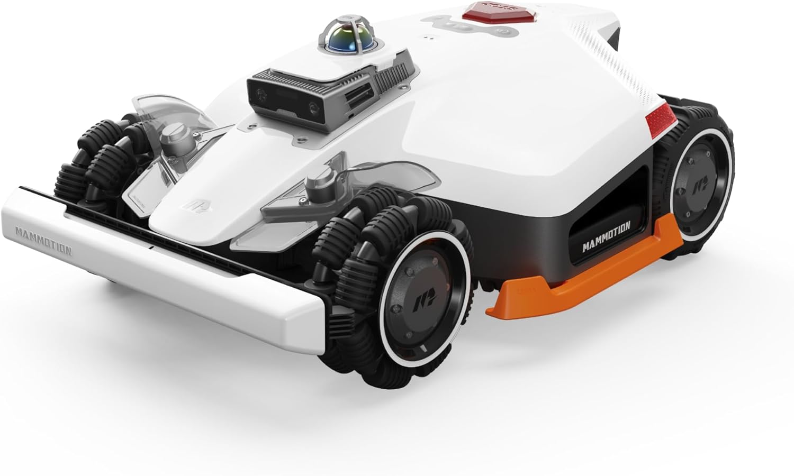

"Le LUBA 2 AWD 3000X est le robot le plus abouti pour les grands jardins exigeants. 4WD, 80% de pente, 3000 m², 4G intégré. Il n'existe pas de meilleur tout-terrain du marché en 2025."
9 zones différentes, pentes à 35%, jardin de 2400 m². Aucun problème en 8 mois. Le rendu visuel avec les lignes parallèles est spectaculaire. Les voisins pensent que j'ai un jardinier pro.
Propriétaire de 8 LUBA 2 depuis 2024. Je ne pense pas qu'il existe une meilleure tondeuse robot au monde actuellement. Matériel premium à la réception.
Quelques problèmes de connexion 4G au début. L'assistance Mammotion a répondu très rapidement et résolu le souci en 48h. Depuis, plus aucun problème.
Tonde 500 m²/h c'est vraiment rapide pour cette taille. Autonomie 260 min impressionnante. Juste l'app qui mérite encore un peu de polish.
Répondez à 3 questions et obtenez votre sélection personnalisée parmi 30 robots.